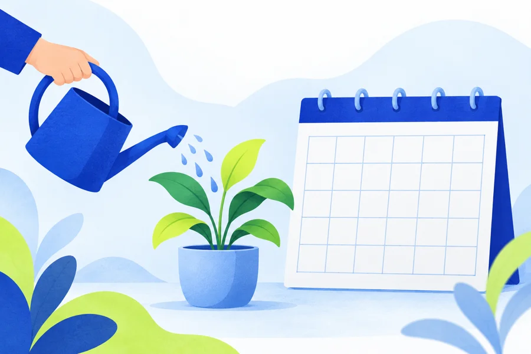

Pensar. Perceber. Viver.
O óbvio cognitivo
para todas asáreas da vida.
Um convite para olhar com atenção para o que pensamos, sentimos e fazemos.
Comece por vocêUma jornada de autoconhecimento
Existe alguém que merece o seu olhar: você.
Conhecer a si mesmo é um convite para compreender seus pensamentos, acolher perguntas e escolher com mais consciência. Comece pelo tema que conversa com o seu momento.
Transforme sua reflexão em um próximo passo ↗01 / AUTOCONHECIMENTOOlhe para dentro com curiosidade
Conhecer-se também é observar como você pensa, sente e age nas situações comuns.
O que minhas escolhas dizem sobre mim?
Abrir reflexão guiadaVagner Pires · Autor e idealizador
- Observe uma situação recente.Escolha um episódio cotidiano e descreva o que aconteceu, sem se definir por ele.
- Separe pensamento, sentimento e ação.O que passou pela sua cabeça? O que você sentiu? Como respondeu?
- Procure um valor importante.Que valor você gostaria de expressar numa próxima situação: respeito, honestidade, cuidado ou outro?
02 / MEDOSDê nome ao que você teme
Uma pergunta concreta pode ajudar a distinguir o que aconteceu daquilo que você imagina que poderá acontecer.
O que eu temo que aconteça?
Abrir reflexão guiadaVagner Pires · Autor e idealizador
- Escreva o receio.Complete: “Tenho medo de que…”. Escolha algo que se sinta confortável em observar.
- Diferencie fato e previsão.O que você sabe? O que é uma possibilidade? Que informação ainda falta?
- Escolha um passo seguro.Considere pedir informação, preparar-se melhor ou conversar com alguém de confiança. Respeite seus limites.
03 / FERIDAS EMOCIONAISRespeite a sua história
Algumas experiências ainda doem. Você não precisa contar tudo, reviver lembranças difíceis ou resolver tudo agora.
De que cuidado eu preciso hoje?
Abrir reflexão guiadaVagner Pires · Autor e idealizador
- Olhe para o presente.Observe o que está difícil hoje, sem se obrigar a revisitar o passado.
- Reconheça uma necessidade.Talvez você precise de descanso, acolhimento, um limite ou de tempo. Dê nome ao que faz sentido para você.
- Pense em apoio.Anote uma pessoa ou um profissional com quem poderia conversar, se desejar. Você pode interromper esta reflexão a qualquer momento.
04 / APROVAÇÃOPerceba para quem você está escolhendo
Ouvir outras pessoas pode ser valioso. Observe também o espaço que seus valores têm nas suas decisões.
O que estou tentando provar aos outros?
Abrir reflexão guiadaVagner Pires · Autor e idealizador
- Identifique uma escolha.Pense em uma decisão recente em que a opinião de alguém teve muito peso.
- Escute sua própria resposta.O que você desejava? O que esperava que os outros pensassem? Essas duas coisas combinavam?
- Expresse uma preferência.Escolha uma situação simples e segura para comunicar o que prefere, com clareza e respeito.
05 / RESPOSTAS CONSCIENTESAbra espaço antes de responder
Entre perceber uma reação e tomar uma decisão, às vezes cabe uma pausa para entender o que importa.
Como gostaria de responder a isso?
Abrir reflexão guiadaVagner Pires · Autor e idealizador
- Reconheça sua reação.Nomeie o que percebe: irritação, pressa, tristeza ou vontade de se afastar.
- Considere as opções.Responder agora, pedir um tempo ou buscar mais informação são possibilidades a avaliar conforme a situação.
- Escolha uma resposta.Pense no que está ao seu alcance e nas consequências para você e para as outras pessoas.
06 / ESCOLHAS E FUTUROEscolha o que cultivar
Você pode reconhecer o que deseja manter e o que gostaria de mudar, um passo de cada vez.
Quem quero me tornar nas minhas ações?
Abrir reflexão guiadaVagner Pires · Autor e idealizador
- O que permanece?Anote um hábito, um valor ou uma relação que deseja cuidar.
- O que precisa mudar?Escolha uma atitude concreta que gostaria de ajustar, sem transformar isso numa cobrança para mudar tudo.
- Qual é o primeiro passo?Defina uma ação pequena e um momento possível para realizá-la. Depois, revise o que aprendeu.
Conhecer a si mesmo
é o começo de uma nova vida.Vagner Pires
Da pergunta à ação
Meu próximo passo.
Não é preciso ter todas as respostas. Escolha algo que deseja preservar, algo que quer ajustar e uma pequena ação que caiba na sua realidade.
Este espaço é opcional. As respostas não são enviadas nem salvas pelo site. Ao atualizar ou sair da página, elas podem ser perdidas.
Da reflexão à prática
Um tema. Um primeiro passo.
Escolha um tutorial e abra o passo a passo para levar a reflexão ao seu cotidiano.
Pensamentos01Separe fatos de interpretações
Ver passo a passo
- Descreva o que aconteceu.Anote apenas o que poderia ser observado: o que foi dito ou feito, sem supor intenções.
- Identifique sua interpretação.Escreva o significado que você atribuiu ao fato. Por exemplo: “Não respondeu; acho que ficou chateado”.
- Considere outras possibilidades.A pessoa poderia estar ocupada ou não ter visto a mensagem? Pense em explicações que também sejam possíveis.
- Escolha o próximo passo.Se for importante, procure mais informação ou converse diretamente antes de concluir.
Emoções02Dê nome ao que você sente
Ver passo a passo
- Pare por um momento.Se puder, afaste-se brevemente da situação e observe como você está.
- Procure uma palavra.É frustração, tristeza, medo, alegria? Você pode sentir mais de uma emoção ao mesmo tempo.
- Observe o contexto.O que aconteceu antes desse sentimento? Anote sem se cobrar uma resposta perfeita.
- Decida como responder.Você precisa de tempo, descanso ou de uma conversa? Escolha uma ação possível e respeitosa.

Hábitos03Comece com uma ação pequena
Ver passo a passo
- Escolha um único hábito.Defina algo específico, como ler uma página, em vez de “mudar minha rotina”.
- Associe a um momento.Escolha uma ocasião realista: depois do café ou antes de guardar o material de trabalho.
- Facilite o começo.Deixe o que você precisa à mão e diminua a tarefa até que caiba no seu dia.
- Revise sem se punir.Observe o que funcionou. Se não conseguiu, ajuste o horário ou o tamanho do passo e retome.
Relacionamentos04Converse com mais clareza
Ver passo a passo
- Escolha um momento adequado.Pergunte se a outra pessoa pode conversar com atenção.
- Fale de uma situação concreta.Descreva um episódio, evitando “você sempre” ou “você nunca”.
- Explique e faça um pedido.Diga como a situação afetou você e o que gostaria de combinar daqui para frente.
- Escute a resposta.Confira se entendeu o ponto de vista da pessoa e procure um acordo possível para os dois.
Trabalho e estudos05Defina a próxima prioridade
Ver passo a passo
- Coloque as tarefas no papel.Liste o que precisa fazer para não depender apenas da memória.
- Observe prazo e consequência.O que tem prazo real? O que atrapalha outras tarefas se ficar para depois?
- Escolha uma tarefa e divida.Troque “fazer o projeto” por uma ação concreta, como escrever o primeiro parágrafo.
- Reserve um período viável.Escolha um intervalo na sua agenda, reduza interrupções possíveis e revise o avanço ao final.
Decisões06Compare antes de escolher
Ver passo a passo
- Defina a decisão.Escreva qual escolha precisa fazer e até quando. Evite misturar várias decisões.
- Escolha seus critérios.Considere tempo, custo, responsabilidades e seus valores, conforme a situação.
- Compare as alternativas.Anote vantagens, limitações e informações que ainda faltam em cada opção.
- Dê um passo proporcional.Quando for possível, experimente em pequena escala. Em escolhas importantes, procure informação e orientação adequadas.
Conteúdo educativo para reflexão e organização do cotidiano. Não substitui acompanhamento psicológico.
A proposta
Um novo olhar para
o que está diante de nós.
O cotidiano está cheio de perguntas que merecem atenção. Por que pensamos assim? O que orienta nossas escolhas? Como nos relacionamos com nós mesmos e com os outros?
Psicologia Que Funciona nasce desse convite à reflexão: aproximar o pensamento da vida real, com clareza e linguagem simples.
Vagner PiresAutor e idealizador do projeto